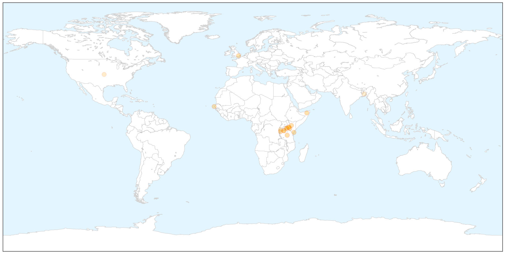
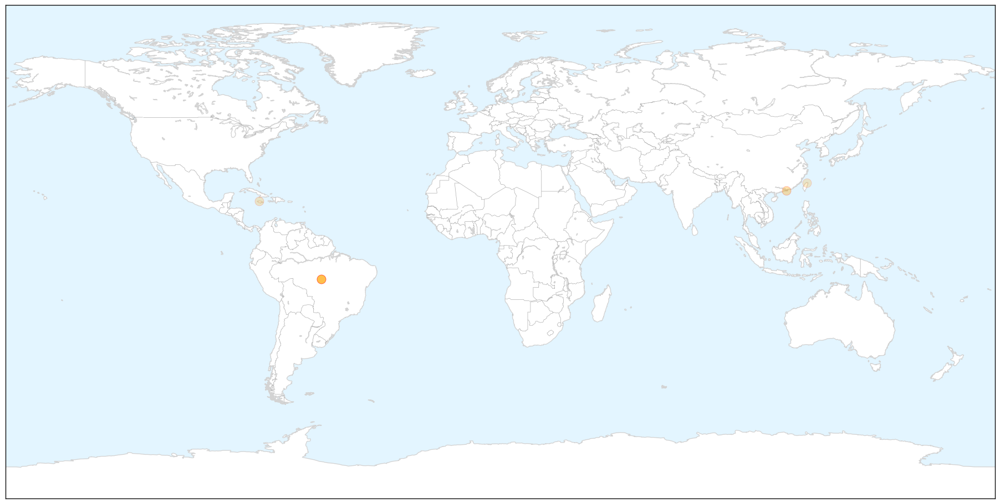

Cholera
30-Day Web Trend
4 alerts, 1 warnings

30-Day Twitter Trend
1 alerts, 0 warnings

Article Locations

X

Article Confidences

Top Articles:
- 0.999
- 65 Kenyans succumbed to cholera: Health Ministry
- 0.996
- Kenya confirms 65 deaths from cholera outbreak
- 0.994
- The most from the coast
- 0.987
- Cholera death toll rises to 65 as Nakuru, city worst affected - Kenya
- 0.985
- Kenya confirms 65 deaths from cholera outbreak
- 0.980
- Two die, 30 hospitalized after cholera outbreak in Kenyan prison - Xinhua
- 0.979
- Two die, 30 hospitalized after cholera outbreak in Kenyan prison
- 0.942
- Kenya: Cholera death toll rises to 65 as Nakuru, city worst affected
- 0.928
- As cholera confirmed among Burnundian refugees in Tanzania, Oxfam delivers water and sanitation to reduce spread of disease
- 0.927
- As cholera confirmed among Burnundian refugees in Tanzania, Oxfam delivers water and sanitation to reduce spread of disease
- 0.923
- As cholera confirmed among Burnundian refugees in Tanzania Oxfam delivers water and sanitation to reduce spread of disease
- 0.900
- Pastor Caught With N609m Hard Drugs At Lagos Airport
- 0.769
- Sudan: 20 Cases Of Cholera Confirmed Among Burundian Refugees In Tanzani
- 0.654
- Govt, UNHCR say Burundian refugees face no epidemic risk - The New Times
- 0.613
- 3 Reasons the Government Should Not Ban Bottled Water Sales Because of Global Warming
- 0.564
- Study reveals intestinal bacteria succession during recovery from cholera in Bangladesh
- 0.556
- As cholera confirmed among Burnundian refugees in Tanzania, Oxfam delivers water and sanitation to reduce spread of disease
- 0.524
- Học qua tin tức: Tình cảnh khốn cùng của người tị nạn Burundi
Top Tweets:
-
No tweets found for May 20, 2015
Dengue Fever
30-Day Web Trend
0 alerts, 0 warnings

30-Day Twitter Trend
1 alerts, 0 warnings

Article Locations

X

Article Confidences

Top Articles:
- 0.998
- Beware of mosquito borne Ziko virus now in Brazil
- 0.997
- Jamaica on alert following outbreak of mosquito-borne Zika virus
- 0.982
- Jamaicans urged to destroy mosquito breeding sites amidst zika virus outbreak in Brazil
- 0.971
- CHP alert on rising dengue activity in Taiwan
- 0.663
- Don't repeat CHIKV mistakes with ZIKV, Seiveright urges
- 0.620
- Dengue vigilance urged
Top Tweets:
-
No tweets found for May 20, 2015